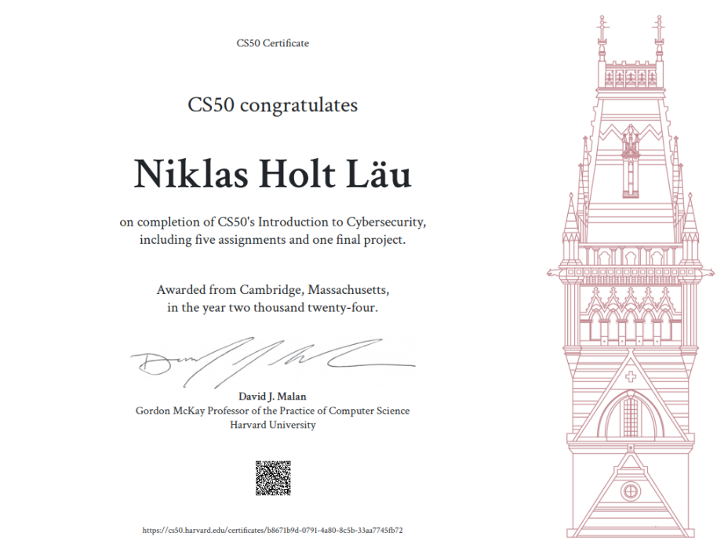

Securing Accounts
Protecting accounts, authentication credentials, and access to online services.
Final project for Harvard CS50's Introduction to Cybersecurity. A security analysis of Microsoft's discovery of the HM Surf vulnerability in Apple's macOS Safari configuration.
Harvard University's CS50 Introduction to Cybersecurity course explores the principles and practices involved in protecting accounts, information, computer systems, software, and personal privacy.
The course covered five main topics, providing a foundation for understanding security risks and applying appropriate protective measures.
Protecting accounts, authentication credentials, and access to online services.
Understanding how sensitive information can be protected against unauthorized access.
Identifying system-level risks and improving the security of computing environments.
Understanding software vulnerabilities and the importance of secure implementation.
Protecting personal information and limiting unnecessary access to sensitive data.
Course assessment: Reports and assignments were reviewed by Harvard University staff. The final project required applying the course concepts to a cybersecurity subject.
As part of Harvard University's CS50 Introduction to Cybersecurity course, I was required to complete a final project investigating a cybersecurity issue and applying the concepts covered during the course.
I chose to analyze Microsoft's discovery of a macOS vulnerability affecting Apple's Safari privacy protections, known as HM Surf and tracked as CVE-2024-44133.
The project involved documenting the vulnerability, analyzing the response, and proposing measures that could help prevent similar attacks in the future. I also produced a video report explaining the vulnerability and discussing its discovery and mitigation.
Microsoft Threat Intelligence identified a macOS vulnerability called HM Surf that could bypass Apple's Transparency, Consent, and Control (TCC) privacy protections under certain conditions. TCC is designed to help ensure that applications obtain the appropriate permissions before accessing sensitive user data and hardware.
The vulnerability involved manipulating Safari configuration files to circumvent privacy protections. Depending on the circumstances, exploitation could expose sensitive information, including browsing history and data associated with camera and microphone access.
Microsoft disclosed the issue to Apple. Apple addressed the vulnerability in macOS Sequoia under CVE-2024-44133. Microsoft also described detection capabilities in Microsoft Defender for Endpoint to help identify exploitation attempts through behavioral monitoring.
The case highlights the risks associated with permission models, application entitlements, and trusted system components. It also demonstrates the importance of coordinated vulnerability disclosure and cooperation between technology vendors.
Key takeaway: Security mechanisms are only effective when their permission boundaries cannot be circumvented by manipulating trusted application configurations. Defense requires secure design, timely patching, monitoring, and collaboration between vendors.
The final project included a video presentation explaining the HM Surf vulnerability, its implications, and the security considerations involved in understanding and mitigating the issue.
Successful completion of the course requirements is recognized with a CS50 certificate. The certification represents completion of the course and its required assessments.

Taking the course provided me with a deeper understanding of the cybersecurity landscape and its critical role in today's digital environment. It enhanced my ability to think analytically about risk, system integrity, and the importance of proactive defense strategies.
Analyzing HM Surf also demonstrated how weaknesses in trusted system components can undermine privacy protections, even within mature operating systems. Investigating the vulnerability reinforced the importance of understanding attack surfaces, documenting technical findings, and considering practical mitigation strategies.
This experience strengthened my commitment to contributing to secure, resilient technologies that protect both individuals and organizations from evolving cyber threats.
The following resources provide additional information about the course, the certification, and the HM Surf vulnerability.